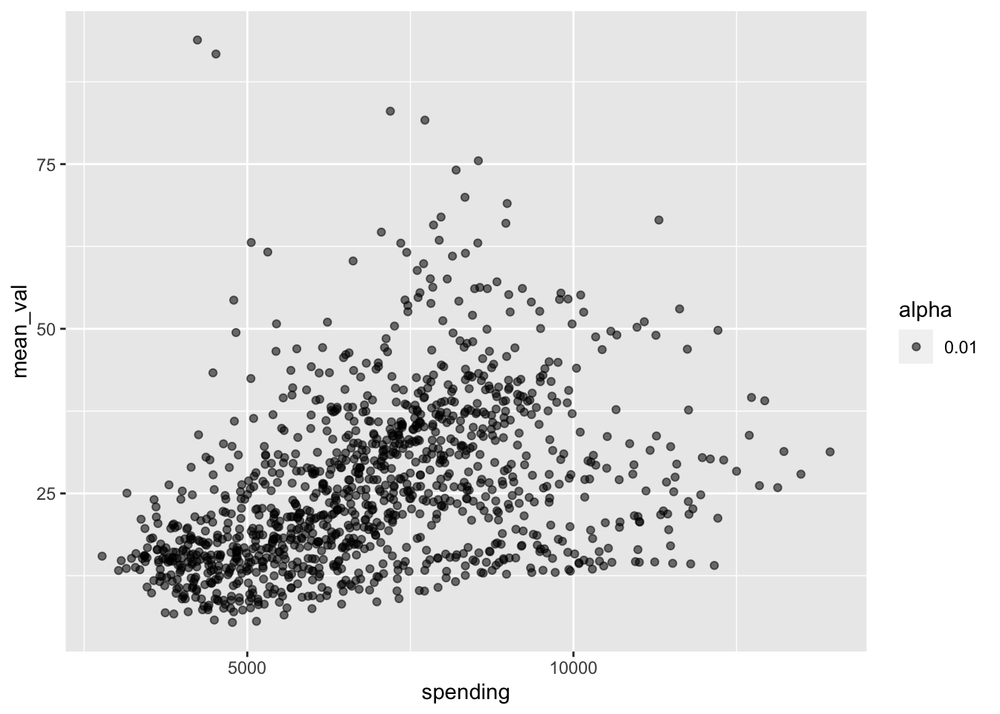

`summarise()` has grouped output by 'year_id', 'location_name'. You can
override using the `.groups` argument.
load("dataset/phc_mmr.RData")combined_data |>ggplot(aes(x = spending, y = mean_val)) +geom_point(aes(alpha =0.01))

combined_data |>ggplot(aes(x = spending, y = mean_val)) +geom_point(aes(alpha =0.01)) +facet_wrap(~year_id) +theme(legend.position ="none") +labs(title ="Maternal Mortality v.s. Healthcare Spending by Year",x ="Spending",y ="MMR" ) +geom_smooth(method ="lm", se =FALSE)
`geom_smooth()` using formula = 'y ~ x'
### why is this positively correlated???? im so confused
# regressing mmr vs spending over the yearscd_1999 <- combined_data |>filter(year_id =="2018")lin_reg <-lm(mean_val ~ spending, cd_1999)summary(lin_reg)
Call:
lm(formula = mean_val ~ spending, data = cd_1999)
Residuals:
Min 1Q Median 3Q Max
-22.7215 -7.2697 -0.0165 4.2673 21.2633
Coefficients:
Estimate Std. Error t value Pr(>|t|)
(Intercept) 62.397563 10.061983 6.201 8.1e-08 ***
spending -0.002775 0.001044 -2.659 0.0103 *
---
Signif. codes: 0 '***' 0.001 '**' 0.01 '*' 0.05 '.' 0.1 ' ' 1
Residual standard error: 11.13 on 54 degrees of freedom
Multiple R-squared: 0.1158, Adjusted R-squared: 0.09938
F-statistic: 7.069 on 1 and 54 DF, p-value: 0.0103
## figuring out how to do this automated-lysummary_df <-tibble(year =numeric(),estimate =numeric(),std.error =numeric(),t.value =numeric(),p.value =numeric())lm(mean_val ~ spending*year_id, combined_data)
for (year inseq(1999, 2019)){ lm_model <-lm(mean_val~spending, data = combined_data |>filter(year_id == year)) summary_lm <-as_tibble(summary(lm_model)$coefficients)[2,]colnames(summary_lm) <-c("estimate", "std.error", "t.value", "p.value") summary_lm$year <- year summary_df <-bind_rows(summary_df, summary_lm)}
## make standard deviation for each variable of interest grouped by yearstd_dev_mmr <- combined_data |>group_by(year_id) |>summarise(sd_mmr =sd(mean_val))std_dev_phc <- combined_data |>group_by(year_id) |>summarise(sd_phc =sd(spending))# combine themstd_combined <-merge(std_dev_mmr, std_dev_phc, by =c("year_id"), all =TRUE)print(std_combined)